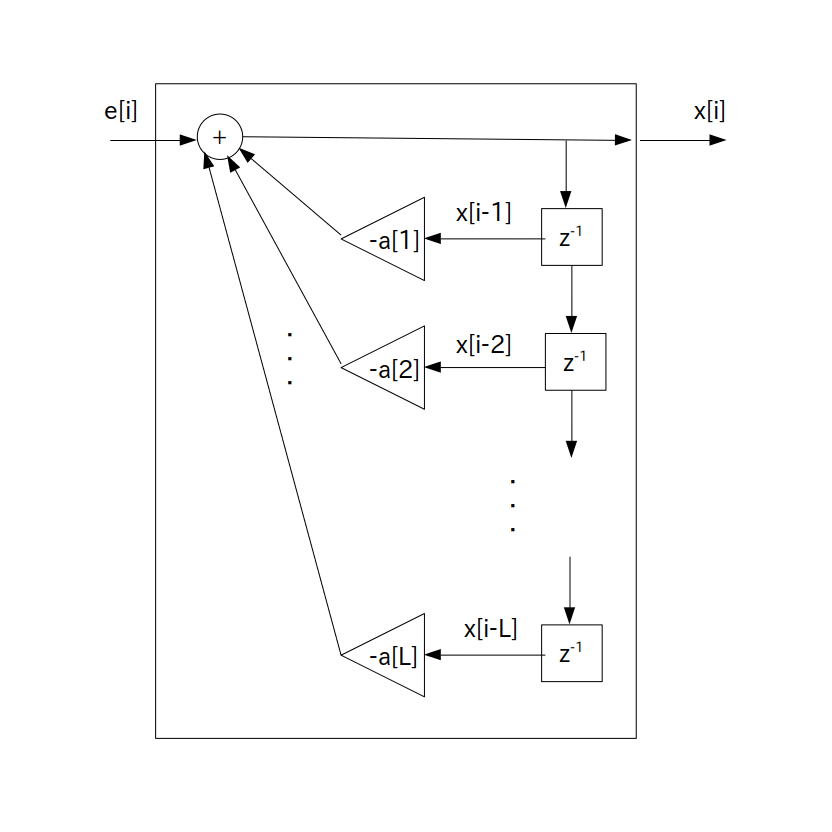

次に前ページで示した線形予測誤差の定義式を以下の式の様に変形してみます。
この式の事を「$\textrm{L}$ 次 AR モデル」( Auto-Regressive model : 自己回帰モデル)と呼び、記号 AR(L) で表します。
次数 $\textrm{L}$ を正の整数とした時
\begin{align*} x[i] & = -\sum_{n=1}^{\textrm{L}} \{ a[n] \cdot x[i-n] \} \} + e[i] \\ & = -a[1] \cdot x[i-1] -a[2] \cdot x[i-2] - \cdots -a[\textrm{L}] \cdot x[i-\textrm{L}] + e[i] \\ \end{align*}$a[n]$ ・・・ LPC 係数
ただし AR モデルでは線形予測誤差 $e[i]$ を正規分布などの任意のホワイトノイズに置き換えます。
すると観測データ $x[i]$ は確率変数に変わるのでサンプリング毎に異なる値が出てくる様になります。
※1 線形予測誤差をホワイトノイズに置き換えるのは強引ではないのかと思うかもしれませんがモデル化の世界では割とポピュラーな手法です。ただし検定などをしてモデルの当てはまり具合を調べる必要があります。
※2 「$x[0]$ から $x[\textrm{N}-1]$ まで $\textrm{N}$ 個分だけ観測データとして手に入れた」と1 ページ目で書きましたが、AR モデルではこれらの観測データは確率変動しない静的なデータではなくて、ある確率に従ってたまたま出力された実現値であるとみなします。
さて AR モデルは次のIIR フィルタで表されます。
$e[i]$ は任意のホワイトノイズとする
要するにホワイトノイズ $e[i]$ を入力すると確率変数 $x[i]$ が出力される IIR フィルタとなります。